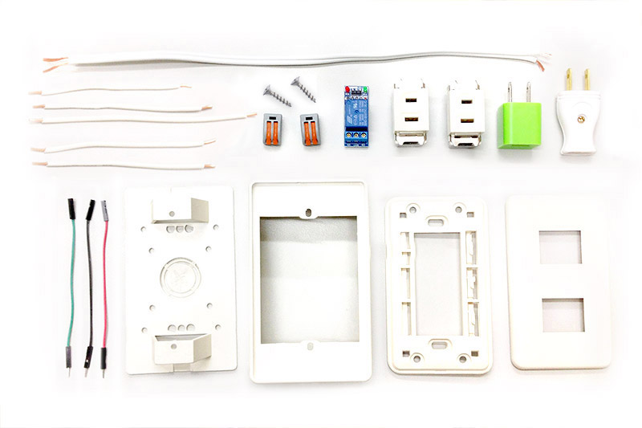
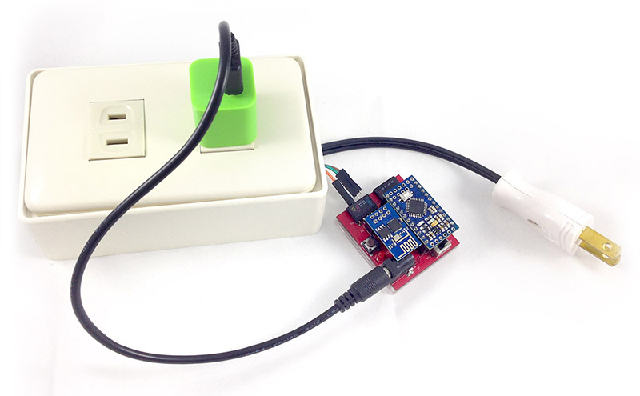

Webduino 智慧插座套件 ( 電子材料包 )
Webduino 智慧插座是將我們一般生活裡常見的插座改裝，透過馬克一號或是 Fly 與繼電器的輔助，讓插座可透過無線網路連上雲端，如此一來就可以輕鬆實現手機遙控插座、設定插座自動供電設施、依據氣溫自動啟動風扇...等智慧插座應用。
售價：
新台幣 840 元整 ( 已含稅 )
點選「立刻購買」，將會前往 Webduino 露天賣場，貨運可以選擇「超商貨到付款」、「郵局包裹」、「7-11 取貨」模式，購買前請先 閱讀購買須知以及退換貨說明，歡迎政府機關、教育單位或公司行號採購，採購相關資訊請 來信 或來電 07-3388511 洽詢。
產品內容：
- 1. 雙孔插外盒 x1
- 2. 底板 x1
- 3. 上層夾板 x1
- 4. 螺絲 x2
- 5. 插座 x2
- 6. 單心線 x5
- 7. 插頭 x1
- 8. 插頭電線 x1
- 9. 快速接頭 x2
- 10.杜邦線 ( 公母 ) x3
- 11.繼電器 x1
- 12.USB 接頭 x1
產品照片：

和 Webduino 馬克 1 號組裝後長相：
